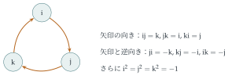

STEP III 1993、第5問
先に進む前に問題を読んでおこう。問題は STEP Support Programme の問題データベースにある： step.maths.org/questions/93-s3-q5
導入
1843年10月16日、ダブリンのロイヤル運河沿いを妻と散歩していたハミルトン（William Rowan Hamilton）は、何年も追い求めていたひらめきを得た。彼は、複素数が数の組（対）を掛け合わせるのと同じように、三つ組の数を掛け合わせようとしては失敗していた。そのとき突然、答えには4つの数と、順序が意味をもつ乗法、すなわち \(ij \neq ji\) となる乗法が必要だと気づいたのである。彼はその規則をブルーム橋の石に刻みつけた。 \[\mathrm{i}^2 = \mathrm{j}^2 = \mathrm{k}^2 = \mathrm{ijk} = -1.\] これが四元数（quaternions）である。この問題では、四元数を複素数の組から構成し、その中にねじれた乗法をもつ8個の元からなる小さな群（group）を見いだす。今日、四元数はあらゆるコンピュータゲーム、フライトシミュレータ、宇宙船の誘導システムにおいて、3次元の回転を記述するのに用いられている。
取りかかる前に
群の定義については 第 6.6 節 を参照せよ。さらに2つの用語を導入する。群の元 \(g\) の位数（order）とは、\(g^n = e\) となる最小の正の整数 \(n\) のことである。また、2つの群が同型（isomorphic）であるとは、演算を保つ1対1の対応がそれらの間に存在することであり、つまり両者は「ラベルが違うだけの同じ群」である。
組 \((z_1, z_2)\) を「数」\(z_1 + z_2\mathrm{j}\) を表すものと考えよ。ここで \(\mathrm{j}\) は新しい記号で、\(\mathrm{j}^2 = -1\) を満たし、複素数 \(w\) に対して \(\mathrm{j}w = w^*\mathrm{j}\) を満たすとする。これらの規則を用いて \((z_1 + z_2\mathrm{j})(w_1 + w_2\mathrm{j})\) を計算せよ。\(\circ\) の式が得られるだろうか。
\((z_1 + z_2\mathrm{j})(w_1 + w_2\mathrm{j}) = z_1w_1 + z_1w_2\mathrm{j} + z_2\mathrm{j}w_1 + z_2\mathrm{j}w_2\mathrm{j} = z_1w_1 + z_1w_2\mathrm{j} + z_2w_1^*\mathrm{j} + z_2w_2^*\mathrm{j}^2\) であり、これは \((z_1w_1 - z_2w_2^*) + (z_1w_2 + z_2w_1^*)\mathrm{j}\) に等しい。その通りである。演算 \(\circ\) は、姿を変えた四元数の乗法なのである。
順を追って解く
段階 1 行列による結合法則の証明
\((a \circ b) \circ c = a \circ (b \circ c)\) を直接確かめるのは長い計算になる。もっと鮮やかな方法がある。
\((z_1, z_2)\) に複素行列 \(M = \begin{pmatrix} z_1 & z_2 \\ -z_2^* & z_1^* \end{pmatrix}\) を対応させる。行列の積 \(M(z_1, z_2)\,M(w_1, w_2)\) の第1行は何か。
積の第1行は \(\bigl(z_1w_1 - z_2w_2^*,\ z_1w_2 + z_2w_1^*\bigr)\) であり、これはちょうど \((z_1, z_2)\circ(w_1, w_2)\) である。第2行は \(\bigl(-(z_1w_2 + z_2w_1^*)^*,\ (z_1w_1 - z_2w_2^*)^*\bigr)\) であるから、積も同じ特別な形をしている。したがって \(M(a \circ b) = M(a)M(b)\) である。行列の乗法は結合法則（associativity）を満たし、\(M\) は1対1である（第1行から \(z_1\)、\(z_2\) を読み取れる）から、\(\circ\) は結合法則を満たす。■
段階 2 可換ではない
\((0, 1)\circ(\mathrm{i}, 0) = (0 \cdot \mathrm{i} - 1 \cdot 0,\ 0 \cdot 0 + 1 \cdot \mathrm{i}^*) = (0, -\mathrm{i})\) であるが、\((\mathrm{i}, 0)\circ(0, 1) = (0, \mathrm{i})\) である。よって \(\circ\) は可換（commutative）ではない。
次の4つの特別な積は定義から直ちに従う。 \[\begin{aligned} (z, 0)\circ(w, 0) &= (zw, 0), & (z, 0)\circ(0, w) &= (0, zw), \\ (0, z)\circ(w, 0) &= (0, zw^*), & (0, z)\circ(0, w) &= (-zw^*, 0). \end{aligned}\]
段階 3 8個の元からなる群
四元数の記法では \(A = 1\)、\(C = \mathrm{i}\)、\(B = \mathrm{j}\)、\(D = \mathrm{i}\mathrm{j} = \mathrm{k}\) であり、\(E, G, F, H\) はそれぞれの符号を変えたものである。\(S_1\) のすべての元は、\(u \in \{1, \mathrm{i}, -1, -\mathrm{i}\}\) として \((u, 0)\) または \((0, u)\) の形をしている。
4つの特別な積を用いて、\(S_1\) が閉じていることを示せ。単位元は何か。
4つの特別な積により、\((u, 0)\) または \((0, u)\) の形の2つの元の積は再びこれらのいずれかの形になり、その第1成分または第2成分は \(uv\)、\(uv^*\) または \(-uv^*\) である。\(\{1, \mathrm{i}, -1, -\mathrm{i}\}\) は乗法、共役（conjugation）、符号の反転について閉じている（closed）から、積は \(S_1\) に属する。単位元（identity）は \(A = (1, 0)\) である。実際、\((1, 0)\circ(w_1, w_2) = (w_1, w_2)\) かつ \((w_1, w_2)\circ(1, 0) = (w_1, w_2)\) である。
各元の位数と逆元を求めよ。
\(A\) の位数は \(1\) である。\(E\circ E = (-1, 0)\circ(-1, 0) = (1, 0)\) であるから、\(E\) の位数は \(2\) である。\(C = (\mathrm{i}, 0)\) については \(C\circ C = (-1, 0) = E\) であるから、\(C\) の位数は \(4\) であり、\(C^{-1} = C^3 = E\circ C = G\) である。\(B = (0, 1)\) については \(B\circ B = (-1 \cdot 1^*, 0) = (-1, 0) = E\) であるから、\(B\) の位数は \(4\) であり、\(B^{-1} = F\) である。同様に \(D\circ D = (-\mathrm{i}\cdot\mathrm{i}^*, 0) = (-\mathrm{i}\cdot(-\mathrm{i}), 0) = (-1, 0) = E\) であるから、\(D\) の位数は \(4\) で、逆元は \(H\) である。そして \(G\)、\(F\)、\(H\) はそれぞれ \(C\)、\(B\)、\(D\) の逆元（inverse）であり、これらの位数も \(4\) である。まとめると次のようになる。
| 元 | \(A\) | \(B\) | \(C\) | \(D\) | \(E\) | \(F\) | \(G\) | \(H\) |
|---|---|---|---|---|---|---|---|---|
| 逆元 | \(A\) | \(F\) | \(G\) | \(H\) | \(E\) | \(B\) | \(C\) | \(D\) |
| 位数 | \(1\) | \(4\) | \(4\) | \(4\) | \(2\) | \(4\) | \(4\) | \(4\) |
閉じていること、結合法則（第1段階）、単位元、逆元がそろったので、\(S_1\) は群である。■ これを四元数群（quaternion group）\(Q_8\) という。
段階 4 部分群
\(\{A, B, E, F\} = \{1, \mathrm{j}, -1, -\mathrm{j}\}\) は \(B\) のべきからなる。すなわち \(B^1 = B\)、\(B^2 = E\)、\(B^3 = F\)、\(B^4 = A\) である。よってこれは閉じていて逆元を含むから、部分群（subgroup）であり、位数 \(4\) の巡回群（cyclic group）である。行列 \(J = \begin{pmatrix} 0 & 1 \\ -1 & 0 \end{pmatrix}\) は \(J^2 = -I\)、\(J^3 = -J\)、\(J^4 = I\) を満たすから、これも位数 \(4\) の巡回群を生成する。\(B^k \leftrightarrow J^k\) という対応は同型写像（isomorphism）である。■（実際、\(J\) はちょうど \(M(0, 1)\)、つまり \(B\) に対応する行列である。）
振り返り
行列で表現する。直接確かめるのは骨の折れる結合法則が、行列の乗法から受け継がれた。
式の背後にある構造を見つける。奇妙な演算 \(\circ\) は四元数の乗法であり、そのことに気づくとすべてが易しくなった。
位数と逆元が群を特徴づける。位数の表を見るだけで、\(Q_8\) が普通でない群であることがわかる。位数 \(2\) の元が1個、位数 \(4\) の元が6個あるのである。
背後にある数学
実数は、加法・乗法・除法ができる1次元の数の体系であり、複素数は2次元の体系である。ハミルトンの四元数は4次元であり、やはり除法はできるが、乗法はもはや可換ではない（図 6.7.1）。1878年、フロベニウス（Ferdinand Frobenius）は、\(\mathbb{R}\)、\(\mathbb{C}\)、\(\mathbb{H}\)（ハミルトンにちなむ）の3つが、結合的な乗法をもつ実数上の有限次元「多元体」（division algebras）のすべてであることを証明した。結合法則を諦める代わりに、実数・複素数・四元数と同様に大きさが乗法的である、すなわち \(|xy| = |x|\,|y|\) という性質を保つことにすると、もうちょうど1つだけ存在する。1840年代に John Graves とケイリー（Arthur Cayley）が発見した8次元の八元数（octonions）である。1898年、フルヴィッツ（Adolf Hurwitz）は、このような体系がこの4つに限ることを証明した。（大きさに関する条件を外すと、ほかにもっと奇妙な非結合的多元体が存在するが、ボット（Raoul Bott）、ミルナー（John Milnor）、ケルヴェア（Michel Kervaire）による1958年の深い定理によれば、有限次元の実多元体の次元は必ず \(1\)、\(2\)、\(4\)、\(8\) のいずれかである。）

3次元の回転
絶対値が \(1\) の四元数は3次元空間の回転を記述する。単位ベクトルの軸 \(\mathbf{u}\) のまわりの角 \(\theta\) の回転は \(q = \cos\frac\theta2 + \sin\frac\theta2(u_1\mathrm{i} + u_2\mathrm{j} + u_3\mathrm{k})\) に対応し、ベクトル \(\mathbf{v}\)（\(v_1\mathrm{i} + v_2\mathrm{j} + v_3\mathrm{k}\) と表す）に \(\mathbf{v} \mapsto q\mathbf{v}q^{-1}\) によって作用する。回転の合成は四元数の乗法にほかならない。この方法は行列や角度を用いるよりも効率的で数値的に安定しており、さらに「ジンバルロック」（gimbal lock）を回避できる。ジンバルロックとは自由度が1つ失われる現象で、アポロ計画の宇宙飛行士たちは、ジャイロスコープに基づく航法装置でこれに対処しなければならなかった。半角 \(\frac\theta2\) は、深い事実への手がかりでもある。\(360^\circ\) 回転すると \(q = -1\) となり、\(1\) にはならないのである。これは物理学者が電子のふるまい（スピン（spin））の中に見ている事実である。
4つの平方数
四元数の絶対値は、複素数の場合と同様に乗法的であり、\(|pq| = |p||q|\) が成り立つ。これを成分で書き下すと、オイラー（Euler）の四平方恒等式（four-square identity）が得られる。すなわち、4つの平方数の和どうしの積は、それ自身4つの平方数の和である。これは、すべての正の整数が4つの平方数の和であるというラグランジュ（Lagrange）の定理の鍵となるステップである。この定理は 第 7.8 節 で証明する。これは 第 1.6 節 の二平方の結果の4次元版にあたる。
思考のスキル
抽象的な演算について考えにくいときは、それがなじみのある演算になるような具体的なモデル、たとえば行列を見つけよ。
そうすれば結合法則のような性質は労せずして得られる。群を行列で表現して研究するというこの考え方は、表現論（representation theory）という大きく美しい分野へと発展していく。
次の一歩
ハミルトンの規則。組を用いて、\(C\circ B = D\) および \(B\circ C = H\)、すなわち \(\mathrm{ij} = \mathrm{k}\) および \(\mathrm{ji} = -\mathrm{k}\) を確かめよ。
位数 \(2\) の元はただ1つ。\(E = -1\) が \(Q_8\) における唯一の位数 \(2\) の元であることを示せ。このことから、\(Q_8\) は正方形の対称性の群（位数 \(2\) の元を5個もつ）と同型でないことを導け。
4つの平方数。\(\det M(z_1, z_2) = |z_1|^2 + |z_2|^2\) を示せ。\(\det(M_1M_2) = \det M_1\det M_2\) を用いて、4つの平方数の和どうしの積は4つの平方数の和であることを導け。
部分群。\(Q_8\) の部分群をすべて求めよ。\(\{A\}\) 以外のすべての部分群は \(E\) を含むこと、および \(Q_8\) が位数 \(4\) の3つの巡回部分群の和集合であることを示せ（第 6.6 節 と比較せよ）。
さらに学ぶために
John Conway & Derek Smith, On Quaternions and Octonions（A. K. Peters）。四元数と八元数の幾何と算術。高度だが非常に興味深い。
John Baez, 「The octonions」, Bulletin of the American Mathematical Society 39 (2002)。オンラインでも無料で読める。すばらしい概説であり、序論は今すぐにでも読める。
Andrew Hanson, Visualizing Quaternions（Morgan Kaufmann）。回転のための四元数と、そのグラフィックスへの応用。